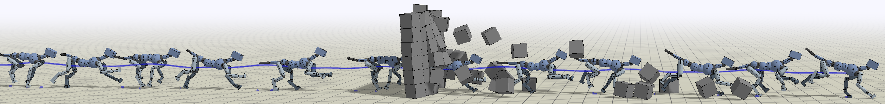

Xue Bin PengAviral KumarGrace ZhangSergey Levine University of California, Berkeley

Abstract
In this paper, we aim to develop a simple and scalable reinforcement learning algorithm
that uses standard supervised learning methods as subroutines. Our goal is an algorithm
that utilizes only simple and convergent maximum likelihood loss functions, while also
being able to leverage off-policy data. Our proposed approach, which we refer to as
advantage-weighted regression (AWR), consists of two standard supervised learning steps:
one to regress onto target values for a value function, and another to regress onto
weighted target actions for the policy. The method is simple and general, can accommodate
continuous and discrete actions, and can be implemented in just a few lines of code on top
of standard supervised learning methods. We provide a theoretical motivation for AWR and
analyze its properties when incorporating off-policy data from experience replay. We
evaluate AWR on a suite of standard OpenAI Gym benchmark tasks, and show that it achieves
competitive performance compared to a number of well-established state-of-the-art RL
algorithms. AWR is also able to acquire more effective policies than most off-policy
algorithms when learning from purely static datasets with no additional environmental
interactions. Furthermore, we demonstrate our algorithm on challenging continuous control
tasks with highly complex simulated characters.